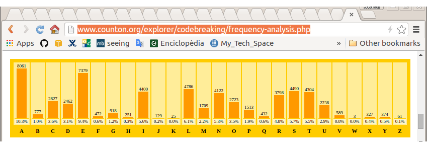
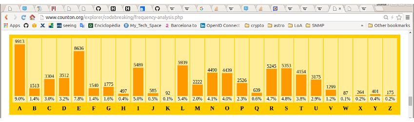
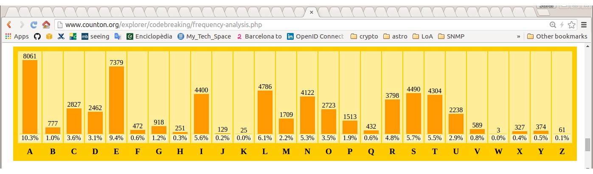
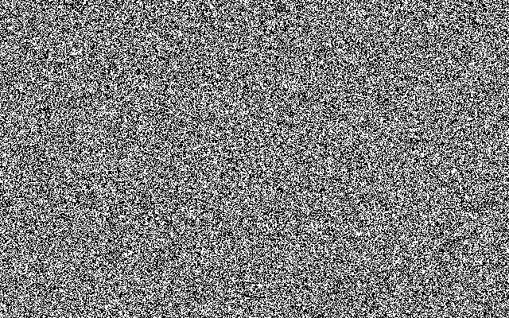
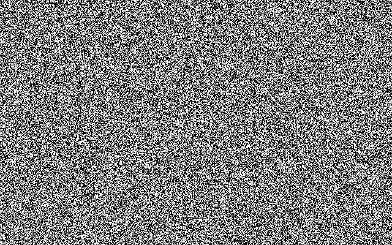
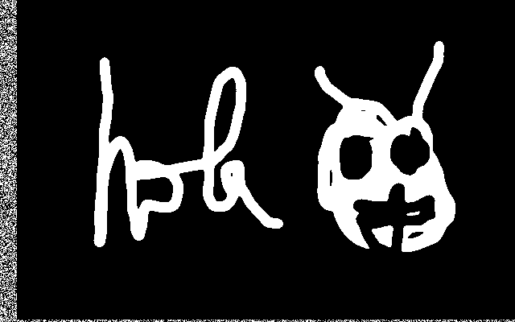

Introducción, Historia

“Curs d'Introducció a la criptografia” by Jordi Íñigo Griera is licensed under a
Creative Commons Attribution 4.0 International License.
Project hosted at github.com/jig/crypto
1976
La NSA selecciona un algoritmo de cifrado de IBM para comunicaciones de la administració: DES (Data Encryption Standard)
Whitfield Diffie y Martin Hellman generan el primer algoritmo práctico de criptografía asimétrica
Historia
(pre-1976)
Criptografía $\Rightarrow$ Cifrado
Hasta los '70 la criptografía servía para dificultar que un tercero pudiera discernir lo que se envía
$c = e(k,m)$
un mensaje $m$ (plain-text) se cifra con la función de cifrado $e()$, que se
le pasa junto a una clave $k$ para dar el mensaje
cifrado $c$ (cipher-text)
$m = d(k,c)$
para descifrar hace falta la clave $k$ y el mensaje cifrado $c$ a la función de descifrado
$m=d(k,c)$
El resultado $m$ es el mensaje en claro de vuelta
pre-1976
Hasta los '70 la criptografía o era "insegura" o no era "práctica"
Cifrado del Cèsar
Cambiamos cada letra de un mensaje, por una letra alternativa del alfabeto
Por ejemplo, para $k=3$
la función de cifrado $e(3,m)$ genera la siguiente tabla:
| $m$ | $c$ | |
| A | $\rightarrow$ | X |
| B | $\rightarrow$ | Y |
| C | $\rightarrow$ | Z |
| D | $\rightarrow$ | A |
| E | $\rightarrow$ | B |
| ... | ... |
Descifrado del Cèsar
Giremos la tabla
| $c$ | $m$ | |
| A | $\rightarrow$ | D |
| B | $\rightarrow$ | E |
| C | $\rightarrow$ | F |
| D | $\rightarrow$ | G |
| E | $\rightarrow$ | H |
| ... | ... |
Seguridad del cifrado del César
HOLAMON
ELIXJLK
¿qué podemos hacer si tenemos acceso al texto cifrado ELIXJLK?
$0 < k < 26 \implies $ podemos hacer un ataque de fuerza bruta
si el mensaje es suficientemente largo, podemos analizar la frecuencia de aparición dels carácteres
Seguridad del cifrado del César
$0 < k < 26 \implies $ podemos hacer un ataque de fuerza bruta
Un ataque de fuerza bruta implica probar sobre el mensaje cifrado $c$ todas las posibles claves $k_i$ hasta que encontremos la "buena":
- descifrar con la clave $\overset{?}{m} = d(c, k_i)$ ...
- ...y validar si $\overset{?}{m}$ es válido (o sea, si $m=\overset{?}{m}$)
Redundancia
- descifrar con la clave $\overset{?}{m} = d(c, k_i)$ ...
- ...y validar si $\overset{?}{m}$ es válido (o sea, si $m=\overset{?}{m}$)
el segundo paso no siempre es sencillo
exige que el espacio de mensajes contenga mensages válidos (pocos) y mensajes inválidos (muchos)
hace falta redundancia
que en el ejemplo anterior la redundancia la tenemos ya que no cualquier combinación de carácteres genera "palabras" ininteligibles
Descifrar
- descifrar con la clave $\overset{?}{m} = d(c, k_i)$ ...
- ...y validar si $\overset{?}{m}$ es valido (o sea, si $m=\overset{?}{m}$)
el primer punto implica conocer el algoritmo de
(des)cifrado $d(\circ,\circ)$
siempre supondremos que un atacante conoce $d(\circ,\circ)$
la única cosa que no debe conocer es la clave $k$
Ataques de fuerza bruta
Las contramedidas contra los ataques de fuerza bruta son:
- que la operación de desxifrado sea costosa
- que haga falta realizar muchas operaciones de descifrado
que la operación sea costosa tiene el problema que quien descifra lícitamente tiene un coste innecessario: actualmente esto no se recomienda
que el atacante esté obligado a probar muchas claves
muchas claves
en una CPU "estándar" se prueban $1.000.000$ clave/CPU/s
es decir: $10^6$ clau/CPU/s
es decir: se prueban $10^{9}$ clave/s en $1000$ CPU
es decir: es prueban $3,6·10^{12}$ clave/h en $1000$ CPU
en AWS EC2 una t2.micro cuesta 1 céntimo/h
es decir $3,6·10^{11}$ clave/€
si tenemos capacidad de diseñar/fabricar $d(\circ,\circ)$ en hardware (ASIC) los costes bajan después de un periodo de amortización
Muchas claves
$10^{11}$ clave/€ en números redondos
e.g. si nuestro "secreto" tiene un coste de 1000 €,
nos hacen falta $2·10^{14}$ claves diferentes ($\approx2^{48}$)
Seguridad del cifrat del César
HOLAMON
ELIXJLK
¿qué podemos hacer si tenemos acceso al texto cifrado ELIXJLK?
$0 < k < 26 \implies $ podemos hacer un ataque de fuerza bruta
si el mensaje es suficientemente largo, podemos analizar la frecuencia de aparición de los carácteres
Análisis de frecuencia
(artículo de Catalunya en la Viquipèdia / counton.org )

(artículo del FCB a la Viquipèdia / counton.org )
Análisis de frecuencia
la estadística se mantiene en textos diferentes
¡la estadística se mantiene inalterada después del cifrado!
podemos aprovechar que la estadística se mantiene
para poder encontrar la clave $k$
Mejoras al
cifrat del César
Cifrado de Vigenère
Similar al cifrado del César, pero $k$ ahora será una secuencia de números en lugar de un sólo número (e.g. antes $k=3$):
e.g. $k = \{3,24,10\}$
Nota: habitualmente se escriben las letras corresponendientes a los números: $k = \{\text{D},\text{Y},\text{K}\}$
ejemplo:
HOLAMON
DYKDYKD
KMVDKYQ
Vigenère: Espai de claus
Ara l'espai de claus és (clau de $3$ caràcters):
$\begin{eqnarray} 0 & < k & < {26}^{3} \\ 0 & < k & < 17576 \end{eqnarray}$
no costa gaire incrementar l'espai de claus fent
servir "contrasenyes" més llargues
en general, per a $n$ caràcters:
$0 < k < {26}^{n}$
e.g. $n=8 \implies 2·10^{11}$ (0,50 €)
e.g. $n=12 \implies 10^{17}$ (200.000 €)
e.g. $n=16 \implies 4·10^{22}$ (deute de Grècia)
e.g. $n=17 \implies$ (PIB mundial)
Vigenère: Anàlisi freqüencial
Si segmentem el text xifrat d'acord a la longitud de la contrasenya, cada fragment de text mostrarà les mateixes estadístiques de l'idioma...
només cal saber la longitud de la "contrasenya" o...
...com que l'"espai de longituds" serà probablement limitat, podem provar-los un per un fins que tenim una estadística reconeixible
amb un espai de claus gran no n'hi ha prou
Confidencialitat perfecte
en general, seguretat incondicional
què és la confidencialitat perfecte?
a partir del text xifrat, no es pot deduir
cap propietat*
del text original en clar,
encara que l'atacant tingui capacitat computacional infinita
*) a part de la longitud
*) a part del moment d'enviar-ho
*) a part de la latència en respondre
és factible la confidencialitat perfecte?
sí,
i va ser inventada i patentada per Vernam el 1917
i va ser demostrada la seva perfecció per Shannon el 1945
com la podem implementar?
el xifrat de Vigenère patia un problema similar al del César:
manifestava l'estadística del missatge en clar
en el missatge xifrat
podem evitar que es manifesti l'estadística en el text xifrat, si utilitzem cada lletra de la contrasenya només un cop
tenim confidencialitat perfecte sii fem servir Vigenére amb una contrasenya tan llarga com el missatge i no coneguda per l'atacant (aleatòria)
Bloc d'un sol ús: xifrat
Vernam va definir el one-time-pad d'una manera similar (però equivalent)
La funció de xifrat $c = e(k, m)$ s'implementa:
$e(k, m) = k \oplus m$
on $\|k\| = \|m\|$
Nota:
$\oplus$ és la or-exclusiva o XOR
$\|\circ\|$ és la longitud en bits de $\circ$
Bloc d'un sol ús: desxifrat
$d(k, c) = k \oplus c$
és fàcil demostrar que funciona ja que:
$\begin{aligned} m &= d(k, c) \\ m &= d(k, e(k, m)) \\ m &= k \oplus c \\ m &= k \oplus (k \oplus m) \\ m &= (k \oplus k) \oplus m \\ m &= \{0\}^{\|k\|} \oplus m \\ m &= m \end{aligned}$
Bloc d'un sol ús: desxifrat
k = ...cal obtenir-la o generar-la
assertEqual(len(m1), len(k))
c = xor(k,m1)
m2 = xor(k,c)
assertEqual(m1,m2)
Experiment amb el Gimp
(has de tenir Gimp instal·lat per a que et funcioni l'experiment)
clica sobre la imatge i obre el fitxer amb Gimp
mira que està composat per dues capes (Ctrl+L):
la clau $k$ i el missatge $m$ combinades amb substract (XOR)
$c$
$k$
$m$
Bloc d'un sol ús: perfecte?
Shannon va demostrar que el blocs d'un sòl ús és "perfecte", i a més va demostrar que la longitud en bits de la clau $k$:
$\|k\| \geq \|m\|$
i per tant, que els blocs d'un sol ús fessin servir
$\|k\| = \|m\|$
era la manera més eficient d'obtenir confidencialitat perfecte
Bloc d'un sol ús: “perfecte”
tots els missatges possibles és poden obtenir donada la clau apropiada a partir d'un bloc xifrat $c_i$
$
\begin{aligned}
m_{ai} &= d(k_a, c_i) \\
m_{bi} &= d(k_b, c_i) \\
m_{ci} &= d(k_c, c_i) \\
& \quad \vdots
\end{aligned}
$
cada clau aplicada a $c_i$ em donarà tots els missatges possibles d'$\|m\|$ bits
($\|m\| = \|k\|$ combinacions)
un atacant no pot aprendre res a partir de $c_i$
$\Downarrow$
la confidencialitat és “perfecte”
vulnerabilitats
cap (fins i tot és invulnerable als atacs de força bruta)...
...mentre es compleixin les hipòtesis de treball:
- clau $k$: només és un sol ús
- clau $k$: aleatòria (i.e. uniformement distribuïda)
pre-1976
Fins els '70 la criptografia o era "insegura" o no era "pràctica"
Bloc d'un sol ús: poc pràctic
$\|k\| = \|m\|$
costa tant acordar $k$ de forma segura, com enviar directament $m$ en clar pel mateix canal segur
El telèfon vermell entre Washington i Moscou era (en realitat) un teletip que usava xifrat de bloc d'un sol ús
La clau $k$ s'intercanviava via diplomàtica en cinta que s'entregava en ambdós sentits. Mentre no calia, s'havia de guardar protegida. Es destruïa després de ser usada
En aquest cas la clau s'acordava/es preparava per endavant per a quan calgués enviar algún missatge poguer-ho fer de forma immediata
A més a més, el one-time-pad permetia treballar de forma segura sense intercanviar cap algorisme secret que permetés donar una avantatge tècnic a l'enemic